| Término | Significado |
|---|---|
| SOLID | Acrónimo formado por las iniciales de los cinco principios en inglés. Es un nombre propio y no se traduce (no es «sólido»), aunque en inglés también es un juego de palabras con solid, «sólido». |
| Stakeholder | Parte interesada: alguien con interés en el sistema (cliente, área de negocio, dirección…). |
| Merge | Fusión: combinar en control de versiones (Git, etc.) los cambios que dos personas hicieron sobre el mismo archivo. |
| CFO / COO / CTO | Director financiero / director de operaciones / director de tecnología. |
| DBA | Administrador de bases de datos. |
| Nombres de clases | Employee, calculatePay(), Interactor, etc. Son identificadores de código y se mantienen en inglés, tanto en el texto como en los diagramas. |
III
Los buenos sistemas de software comienzan con código limpio. Por un lado, si los ladrillos no están bien hechos, la arquitectura del edificio no importa mucho. Por otro lado, se puede armar un desastre considerable con ladrillos bien hechos. Aquí es donde entran en juego los principios SOLID.
Los principios SOLID nos dicen cómo organizar nuestras funciones y estructuras de datos en clases, y cómo deben interconectarse esas clases. El uso de la palabra «clase» no implica que estos principios solo se apliquen al software orientado a objetos. Una clase es simplemente una agrupación acoplada de funciones y datos. Todo sistema de software tiene agrupaciones de este tipo, se llamen clases o no. Los principios SOLID se aplican a esas agrupaciones.
El objetivo de los principios es crear estructuras de software de nivel medio que:
El término «nivel medio» se refiere a que estos principios los aplican programadores que trabajan a nivel de módulo. Se aplican justo por encima del nivel del código y ayudan a definir los tipos de estructuras de software que se usan dentro de los módulos y componentes.
Así como es posible armar un desastre considerable con ladrillos bien hechos, también es posible crear un desastre a nivel de todo el sistema con componentes de nivel medio bien diseñados. Por esta razón, una vez que hayamos cubierto los principios SOLID, pasaremos a sus equivalentes en el mundo de los componentes y, después, a los principios de la arquitectura de alto nivel.
La historia de los principios SOLID es larga. Empecé a reunirlos a finales de los años ochenta, mientras debatía principios de diseño de software con otras personas en USENET (una especie de Facebook primitivo). Con los años, los principios fueron cambiando y evolucionando. Algunos se eliminaron. Otros se fusionaron. Y otros se añadieron. La agrupación definitiva se estabilizó a principios de los años 2000, aunque entonces los presenté en un orden distinto.
Hacia 2004, Michael Feathers me envió un correo electrónico diciéndome que, si reordenaba los principios, sus primeras palabras formarían la palabra SOLID. Y así nacieron los principios SOLID.
Los capítulos que siguen describen cada principio con más detalle. Este es el resumen ejecutivo:
Estos principios se han descrito en detalle en muchas publicaciones diferentesPor ejemplo, Agile Software Development, Principles, Patterns, and Practices, Robert C. Martin, Prentice Hall, 2002; http://www.butunclebob.com/ArticleS.UncleBob.PrinciplesOfOod; y https://en.wikipedia.org/wiki/SOLID_(object-oriented_design) (o simplemente busca SOLID en Google). a lo largo de los años. Los capítulos que siguen se centrarán en las implicaciones arquitectónicas de estos principios, en lugar de repetir esas discusiones detalladas. Si todavía no conoces estos principios, lo que sigue no basta para entenderlos en detalle, y te convendría estudiarlos en los documentos citados en la nota al pie.
7
De todos los principios SOLID, el principio de responsabilidad única (SRP) es quizá el peor entendido. Probablemente se deba a que tiene un nombre especialmente desafortunado. Es demasiado fácil que los programadores oigan el nombre y supongan que significa que cada módulo debe hacer una sola cosa.
No nos engañemos: sí existe un principio así. Una función debe hacer una, y solo una, cosa. Usamos ese principio cuando refactorizamos funciones grandes en funciones más pequeñas; lo usamos en los niveles más bajos. Pero no es uno de los principios SOLID: no es el SRP.
Históricamente, el SRP se ha descrito así:
Un módulo debe tener una, y solo una, razón para cambiar.
Los sistemas de software se modifican para satisfacer a usuarios y partes interesadas (stakeholders); esos usuarios y partes interesadas son la «razón para cambiar» de la que habla el principio. De hecho, podemos reformular el principio así:
Un módulo debe ser responsable ante uno, y solo un, usuario o parte interesada.
Por desgracia, las palabras «usuario» y «parte interesada» no son realmente las adecuadas aquí. Es probable que haya más de un usuario o parte interesada que quiera cambiar el sistema de la misma manera. En realidad nos referimos a un grupo: una o más personas que requieren ese cambio. A ese grupo lo llamaremos actor.
Así, la versión final del SRP es:
Un módulo debe ser responsable ante uno, y solo un, actor.
| Lo que no dice el SRP | Lo que sí dice el SRP |
|---|---|
| «Cada clase debe hacer una sola cosa». Esa regla existe, pero es para funciones y no es el SRP. | «Cada módulo debe responder ante un solo actor», es decir, ante un único grupo de personas que puede pedir cambios en él. |
Ahora bien, ¿qué queremos decir con la palabra «módulo»? La definición más simple es un archivo de código fuente. La mayoría de las veces esa definición funciona bien. Sin embargo, algunos lenguajes y entornos de desarrollo no usan archivos de código fuente para guardar su código. En esos casos, un módulo es simplemente un conjunto cohesivo de funciones y estructuras de datos.
Esa palabra, «cohesivo», implica el SRP. La cohesión es la fuerza que une el código responsable ante un único actor.
Quizá la mejor manera de entender este principio sea observar los síntomas de su violación.
Mi ejemplo favorito es la clase Employee (empleado) de una aplicación de nóminas. Tiene tres métodos: calculatePay(), reportHours() y save() (figura 7.1).
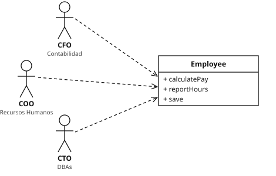
EmployeecalculatePay = calcular el sueldo, reportHours = informar de las horas trabajadas, save = guardar en la base de datos.
Esta clase viola el SRP porque esos tres métodos son responsables ante tres actores muy diferentes:
calculatePay() lo especifica el departamento de contabilidad, que reporta al CFO (director financiero).reportHours() lo especifica y lo usa el departamento de recursos humanos, que reporta al COO (director de operaciones).save() lo especifican los administradores de bases de datos (DBA), que reportan al CTO (director de tecnología).Al poner el código fuente de estos tres métodos en una sola clase Employee, los desarrolladores han acoplado a cada uno de estos actores con los demás. Este acoplamiento puede hacer que las acciones del equipo del CFO afecten a algo de lo que depende el equipo del COO.
Por ejemplo, supongamos que la función calculatePay() y la función reportHours() comparten un algoritmo común para calcular las horas normales (las que no son horas extra). Supongamos también que los desarrolladores, que tienen cuidado de no duplicar código, colocan ese algoritmo en una función llamada regularHours() (figura 7.2).
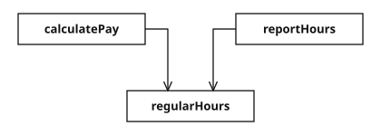
Ahora supongamos que el equipo del CFO decide que hay que ajustar la forma de calcular las horas normales. En cambio, el equipo del COO en Recursos Humanos no quiere ese ajuste, porque usa las horas normales para otro propósito.
A un desarrollador se le encarga hacer el cambio, y ve la práctica función regularHours() llamada por el método calculatePay(). Por desgracia, no se da cuenta de que la función también la llama reportHours().
El desarrollador hace el cambio solicitado y lo prueba cuidadosamente. El equipo del CFO valida que la nueva función se comporta como se esperaba, y el sistema se despliega.
Por supuesto, el equipo del COO no sabe que esto está ocurriendo. El personal de RR. HH. sigue usando los informes generados por la función reportHours(), pero ahora contienen cifras incorrectas. Al final se descubre el problema, y el COO está furioso porque los datos erróneos le han costado millones de dólares a su presupuesto.
Todos hemos visto pasar cosas así. Estos problemas ocurren porque ponemos muy cerca código del que dependen actores diferentes. El SRP dice que hay que separar el código del que dependen actores diferentes.
regularHours() para no repetirlo (principio DRY). En realidad solo era parecido por casualidad: cada actor podía cambiarlo por motivos distintos. Dos fragmentos de código que hoy son iguales pero que cambian por razones diferentes no son duplicación real. Unificarlos acopla a sus actores.
No es difícil imaginar que las fusiones serán frecuentes en archivos de código fuente que contienen muchos métodos diferentes. Esta situación es especialmente probable si esos métodos son responsables ante actores distintos.
Por ejemplo, supongamos que el equipo de DBA del CTO decide hacer un cambio sencillo en el esquema de la tabla Employee de la base de datos. Supongamos también que el equipo de administrativos de RR. HH. del COO decide que necesita un cambio en el formato del informe de horas.
Dos desarrolladores diferentes, posiblemente de dos equipos distintos, obtienen la clase Employee del repositorio y empiezan a hacer cambios. Por desgracia, sus cambios chocan. El resultado es una fusión.
Probablemente no hace falta que te diga que las fusiones son asuntos arriesgados. Nuestras herramientas son bastante buenas hoy en día, pero ninguna herramienta puede resolver todos los casos de fusión. Al final, siempre hay riesgo.
En nuestro ejemplo, la fusión pone en riesgo tanto al CTO como al COO. Y no es descabellado pensar que el CFO también podría verse afectado.
Hay muchos otros síntomas que podríamos investigar, pero todos implican a varias personas que modifican el mismo archivo de código fuente por razones diferentes.
Una vez más, la forma de evitar este problema es separar el código que da soporte a actores diferentes.
Hay muchas soluciones distintas para este problema. Todas trasladan las funciones a clases diferentes.
Quizá la forma más obvia de resolver el problema sea separar los datos de las funciones. Las tres clases comparten el acceso a EmployeeData, que es una estructura de datos simple, sin métodos (figura 7.3). Cada clase contiene solo el código fuente necesario para su función concreta. Las tres clases no pueden conocerse entre sí. Así se evita cualquier duplicación accidental.
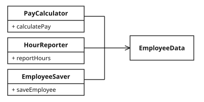
La desventaja de esta solución es que ahora los desarrolladores tienen tres clases que deben instanciar y controlar. Una solución habitual a este dilema es usar el patrón Fachada (Facade) (figura 7.4).
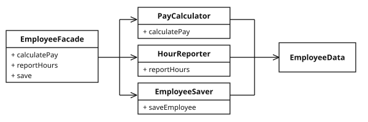
EmployeeFacade contiene muy poco código. Se encarga de instanciar las clases que tienen las funciones y de delegar en ellas.
Algunos desarrolladores prefieren mantener las reglas de negocio más importantes más cerca de los datos. Esto puede hacerse dejando el método más importante en la clase Employee original y usando después esa clase como fachada para las funciones menores (figura 7.5).
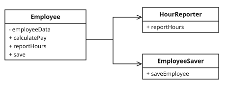
Employee original, que se usa como fachada para las funciones menores| Figura | Idea | Ventaja | Inconveniente |
|---|---|---|---|
| 7.3 | Una clase por actor más una estructura de datos compartida y «tonta» | Separación total: ningún actor afecta a otro | Quien usa el sistema debe crear y manejar tres objetos |
| 7.4 | Igual que 7.3, más una fachada que da una sola puerta de entrada | Separación y comodidad de uso | Una clase extra, casi vacía |
| 7.5 | Employee conserva la regla más importante (el cálculo del sueldo) y delega el resto | La regla de negocio principal queda junto a los datos | Contabilidad sigue «dueña» de Employee |
EmployeeData, pero ninguna de las tres conoce a las otras.
Podrías objetar que, con estas soluciones, cada clase contendría una sola función. No es así en absoluto. Es probable que el número de funciones necesarias para calcular el sueldo, generar un informe o guardar los datos sea grande en cada caso. Cada una de esas clases tendría muchos métodos privados.
Cada una de las clases que contiene una familia de métodos así es un ámbito (scope). Fuera de ese ámbito, nadie sabe que existen los miembros privados de la familia.
El principio de responsabilidad única trata sobre funciones y clases, pero reaparece en otra forma en dos niveles más. A nivel de componentes, se convierte en el principio de cierre común (Common Closure Principle, CCP). A nivel arquitectónico, se convierte en el eje de cambio (Axis of Change) responsable de la creación de los límites arquitectónicos. Estudiaremos todas estas ideas en los próximos capítulos.
8
El principio abierto-cerrado (OCP) lo formuló Bertrand Meyer en 1988.Bertrand Meyer, Object Oriented Software Construction, Prentice Hall, 1988, p. 23. Dice:
Un artefacto de software debe estar abierto a la extensión, pero cerrado a la modificación.
En otras palabras, el comportamiento de un artefacto de software debería poder ampliarse sin tener que modificar ese artefacto.
Esta es, por supuesto, la razón más fundamental por la que estudiamos la arquitectura de software. Evidentemente, si ampliaciones sencillas de los requisitos obligan a hacer cambios masivos en el software, los arquitectos de ese sistema han fracasado de forma espectacular.
La mayoría de quienes estudian diseño de software reconocen el OCP como un principio que los guía en el diseño de clases y módulos. Pero el principio cobra una importancia aún mayor cuando consideramos el nivel de los componentes arquitectónicos.
Un experimento mental lo dejará claro.
Imagina por un momento que tenemos un sistema que muestra un resumen financiero en una página web. Los datos de la página se pueden desplazar con la barra de desplazamiento, y los números negativos se muestran en rojo.
Ahora imagina que las partes interesadas piden que esa misma información se convierta en un informe para imprimir en una impresora en blanco y negro. El informe debe estar bien paginado, con encabezados de página, pies de página y etiquetas de columna adecuados. Los números negativos deben ir entre paréntesis.
Evidentemente, hay que escribir código nuevo. Pero ¿cuánto código antiguo habrá que cambiar?
Una buena arquitectura de software reduciría la cantidad de código modificado al mínimo indispensable. Idealmente, a cero.
¿Cómo? Separando correctamente las cosas que cambian por razones diferentes (el principio de responsabilidad única) y organizando después correctamente las dependencias entre esas cosas (el principio de inversión de dependencias).
Aplicando el SRP, podríamos llegar a la vista de flujo de datos que se muestra en la figura 8.1. Algún procedimiento de análisis inspecciona los datos financieros y produce datos aptos para el informe, que después los dos procesos generadores de informes formatean de la manera adecuada.
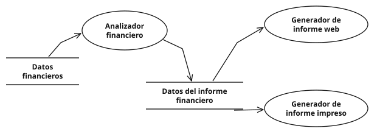
La idea esencial aquí es que generar el informe implica dos responsabilidades separadas: el cálculo de los datos del informe y la presentación de esos datos en una forma adecuada para la web y para la impresora.
Una vez hecha esta separación, tenemos que organizar las dependencias del código fuente para asegurarnos de que los cambios en una de esas responsabilidades no provoquen cambios en la otra. Además, la nueva organización debe garantizar que el comportamiento pueda ampliarse sin modificaciones indebidas.
Lo conseguimos dividiendo los procesos en clases y separando esas clases en componentes, como muestran las líneas dobles del diagrama de la figura 8.2. En esta figura, el componente de arriba a la izquierda es el Controller (controlador). Arriba a la derecha tenemos el Interactor. Abajo a la derecha está la Database (base de datos). Por último, abajo a la izquierda hay cuatro componentes que representan los Presenters (presentadores) y las Views (vistas).
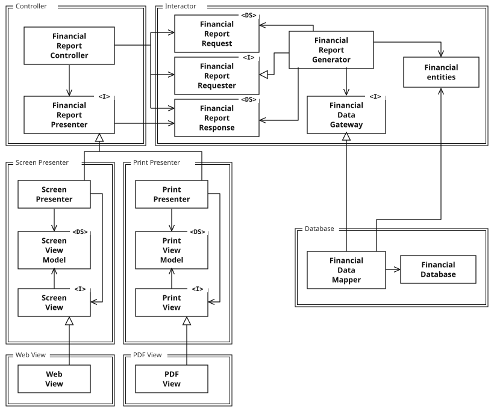
Las clases marcadas con <I> son interfaces; las marcadas con <DS> son estructuras de datos (data structures). Las puntas de flecha abiertas indican relaciones de uso. Las puntas de flecha cerradas indican relaciones de implementación o de herencia.
| Símbolo | Significado |
|---|---|
| Rectángulo con doble línea y nombre arriba | Un componente: algo que se compila y despliega por separado (un .jar, una .dll, un paquete…). |
| Rectángulo simple | Una clase. |
<I> / <DS> | Interfaz / estructura de datos simple (solo datos, sin lógica). |
| Flecha con punta abierta → | «A usa a B»: el código de A menciona a B. |
| Flecha con triángulo hueco ▷ | «A implementa (o hereda de) B». |
FinancialReportController recibe la petición del usuario, la empaqueta en FinancialReportRequest y llama a la interfaz FinancialReportRequester.FinancialReportGenerator, que es la lógica de negocio. Este usa las Financial entities (entidades, es decir, las reglas de negocio) y pide los datos a la interfaz FinancialDataGateway.FinancialDataMapper, en el componente Database, implementa ese gateway y lee de FinancialDatabase.FinancialReportResponse. El FinancialReportPresenter, que es una interfaz, lo recibe, y lo implementa ScreenPresenter o PrintPresenter.ViewModel (los datos ya formateados: números negativos en rojo o entre paréntesis) y llama a su interfaz View, que implementan WebView o PDFView.Lo primero que hay que notar es que todas las dependencias son dependencias de código fuente. Una flecha que apunta de la clase A a la clase B significa que el código fuente de la clase A menciona el nombre de la clase B, pero la clase B no menciona nada de la clase A. Así, en la figura 8.2, FinancialDataMapper conoce a FinancialDataGateway a través de una relación de implementación, pero FinancialDataGateway no sabe absolutamente nada de FinancialDataMapper.
FinancialGateway, pero se refiere a FinancialDataGateway, la interfaz de la figura. En esta traducción se ha usado el nombre correcto.
Lo siguiente que hay que notar es que cada línea doble se cruza en una sola dirección. Esto significa que todas las relaciones entre componentes son unidireccionales, como muestra el grafo de componentes de la figura 8.3. Esas flechas apuntan hacia los componentes que queremos proteger del cambio.
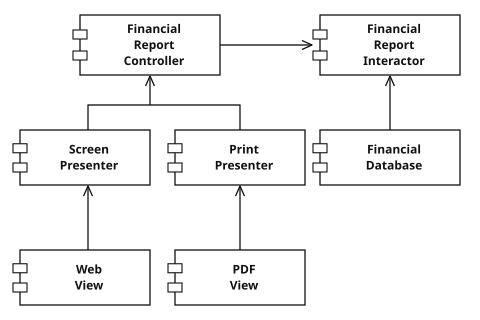
Lo repito: si el componente A debe estar protegido de los cambios del componente B, entonces el componente B debe depender del componente A.
Queremos proteger al Controller de los cambios en los Presenters. Queremos proteger a los Presenters de los cambios en las Views. Queremos proteger al Interactor de los cambios en… bueno, en cualquier cosa.
El Interactor está en la posición que mejor cumple el OCP. Los cambios en la Database, en el Controller, en los Presenters o en las Views no tendrán ningún impacto en el Interactor.
¿Por qué debería el Interactor ocupar una posición tan privilegiada? Porque contiene las reglas de negocio. El Interactor contiene las políticas de más alto nivel de la aplicación. Todos los demás componentes se ocupan de cuestiones periféricas. El Interactor se ocupa de la cuestión central.
Aunque el Controller es periférico respecto al Interactor, es central respecto a los Presenters y las Views. Y aunque los Presenters puedan ser periféricos respecto al Controller, son centrales respecto a las Views.
Observa cómo esto crea una jerarquía de protección basada en la noción de «nivel». Los Interactors son el concepto de más alto nivel, así que son los más protegidos. Las Views están entre los conceptos de más bajo nivel, así que son las menos protegidas. Los Presenters son de un nivel más alto que las Views, pero de un nivel más bajo que el Controller o el Interactor.
Así es como funciona el OCP a nivel arquitectónico. Los arquitectos separan la funcionalidad según cómo, por qué y cuándo cambia, y después organizan esa funcionalidad separada en una jerarquía de componentes. Los componentes de nivel superior en esa jerarquía quedan protegidos de los cambios hechos en los componentes de nivel inferior.
Si el diseño de clases mostrado antes te horrorizó, míralo de nuevo. Gran parte de la complejidad de ese diagrama tenía como objetivo asegurar que las dependencias entre los componentes apuntaran en la dirección correcta.
Por ejemplo, la interfaz FinancialDataGateway, situada entre FinancialReportGenerator y FinancialDataMapper, existe para invertir la dependencia que, de otro modo, habría apuntado del componente Interactor al componente Database. Lo mismo ocurre con la interfaz FinancialReportPresenter y con las dos interfaces View.
Generator → Mapper. Así, el Interactor dependería de la base de datos, y cambiar de base de datos obligaría a recompilar las reglas de negocio. Con la interfaz, el Interactor define qué necesita (FinancialDataGateway) y la base de datos se adapta implementándola: Mapper ▷ Gateway. La flecha ahora cruza el límite de Database hacia Interactor. Esto es el DIP del capítulo 11 aplicado.
La interfaz FinancialReportRequester tiene otro propósito. Está ahí para evitar que FinancialReportController sepa demasiado sobre el funcionamiento interno del Interactor. Si esa interfaz no estuviera, el Controller tendría dependencias transitivas con las FinancialEntities.
Las dependencias transitivas violan el principio general de que las entidades de software no deben depender de cosas que no usan directamente. Volveremos a encontrarnos con ese principio cuando hablemos del principio de segregación de interfaces y del principio de reutilización común.
Así, aunque nuestra primera prioridad es proteger al Interactor de los cambios en el Controller, también queremos proteger al Controller de los cambios en el Interactor, ocultando el funcionamiento interno del Interactor.
FinancialReportGenerator, que conoce las entidades, cualquier cambio en las entidades afectaría al Controller. La interfaz Requester corta esa cadena.
El OCP es una de las fuerzas que impulsan la arquitectura de los sistemas. El objetivo es que el sistema sea fácil de ampliar sin que los cambios tengan un gran impacto. Este objetivo se consigue dividiendo el sistema en componentes y organizando esos componentes en una jerarquía de dependencias que proteja a los componentes de nivel superior de los cambios en los componentes de nivel inferior.
9
En 1988, Barbara Liskov escribió lo siguiente como forma de definir los subtipos:
Lo que se busca aquí es algo como la siguiente propiedad de sustitución: si para cada objeto o1 de tipo S hay un objeto o2 de tipo T tal que, para todos los programas P definidos en términos de T, el comportamiento de P no cambia cuando o1 se sustituye por o2, entonces S es un subtipo de T.Barbara Liskov, «Data Abstraction and Hierarchy», SIGPLAN Notices 23, 5 (mayo de 1988).
Para entender esta idea, que se conoce como principio de sustitución de Liskov (LSP), veamos algunos ejemplos.
Imagina que tenemos una clase llamada License (licencia), como se muestra en la figura 9.1. Esta clase tiene un método llamado calcFee() (calcular la tarifa), al que llama la aplicación Billing (facturación). Hay dos «subtipos» de License: PersonalLicense y BusinessLicense. Usan algoritmos diferentes para calcular la tarifa de la licencia.
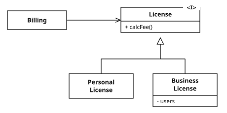
License y sus derivadas cumplen el LSPEste diseño cumple el LSP porque el comportamiento de la aplicación Billing no depende de ninguna manera de cuál de los dos subtipos use. Ambos subtipos son sustituibles por el tipo License.
El ejemplo canónico de violación del LSP es el famoso (o infame, según se mire) problema del cuadrado y el rectángulo (figura 9.2).
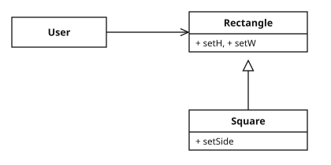
En este ejemplo, Square (cuadrado) no es un subtipo adecuado de Rectangle (rectángulo), porque la altura y la anchura de Rectangle pueden modificarse de forma independiente; en cambio, la altura y la anchura de Square deben cambiar a la vez. Como User cree que se está comunicando con un Rectangle, podría confundirse fácilmente. El siguiente código muestra por qué:
Rectangle r = … r.setW(5); r.setH(2); assert(r.area() == 10);
Si el código representado por «…» produjera un Square, la aserción fallaría.
setW = fijar el ancho, setH = fijar el alto. Si r es en realidad un Square:
r.setW(5): como es un cuadrado, pone ancho = 5 y también alto = 5.r.setH(2): pone alto = 2 y también ancho = 2.r.area() devuelve 2 × 2 = 4, no 10. La aserción falla.Rectangle promete que ancho y alto son independientes, y Square rompe esa promesa. La herencia debe modelar comportamiento sustituible, no clasificaciones del mundo real.
La única forma de protegerse de este tipo de violación del LSP es añadir mecanismos a User (como una sentencia if) que detecten si el Rectangle es, en realidad, un Square. Como el comportamiento de User depende de los tipos que usa, esos tipos no son sustituibles.
En los primeros años de la revolución de la orientación a objetos, veíamos el LSP como una forma de guiar el uso de la herencia, como se mostró en las secciones anteriores. Sin embargo, con los años el LSP se ha transformado en un principio más amplio de diseño de software, que se aplica a interfaces e implementaciones.
Las interfaces en cuestión pueden tener muchas formas. Podríamos tener una interfaz al estilo de Java, implementada por varias clases. O varias clases de Ruby que comparten las mismas firmas de métodos. O un conjunto de servicios que responden todos a la misma interfaz REST.
En todas estas situaciones, y en más, el LSP es aplicable, porque hay usuarios que dependen de interfaces bien definidas y de que las implementaciones de esas interfaces sean sustituibles.
La mejor forma de entender el LSP desde un punto de vista arquitectónico es ver qué le ocurre a la arquitectura de un sistema cuando se viola el principio.
Supongamos que estamos construyendo un agregador de muchos servicios de despacho de taxis. Los clientes usan nuestro sitio web para encontrar el taxi más adecuado, sea de la empresa que sea. Una vez que el cliente decide, nuestro sistema despacha el taxi elegido usando un servicio REST.
Supongamos ahora que la URI del servicio REST de despacho forma parte de la información de la base de datos de conductores. Una vez que nuestro sistema ha elegido un conductor adecuado para el cliente, obtiene esa URI del registro del conductor y la usa para despachar al conductor.
Supongamos que el conductor Bob tiene una URI de despacho como esta:
purplecab.com/driver/Bob
Nuestro sistema añadirá la información del despacho a esta URI y la enviará con una petición PUT, así:
purplecab.com/driver/Bob
/pickupAddress/24 Maple St.
/pickupTime/153
/destination/ORD
pickupAddress = dirección de recogida (calle Maple n.º 24); pickupTime = hora de recogida (153 es un valor de ejemplo con el formato que defina el servicio); destination = destino (ORD es el código del aeropuerto O’Hare de Chicago). Purple Cab («Taxi Morado») es una empresa inventada.
Evidentemente, esto significa que todos los servicios de despacho, de todas las empresas, deben cumplir la misma interfaz REST. Deben tratar los campos pickupAddress, pickupTime y destination de forma idéntica.
Supongamos ahora que la empresa de taxis Acme contrató a unos programadores que no leyeron la especificación con mucha atención. Abreviaron el campo destination a dest. Acme es la mayor empresa de taxis de nuestra zona, y la exesposa del director general de Acme es la nueva esposa de nuestro director general, y… bueno, ya te haces una idea. ¿Qué le pasaría a la arquitectura de nuestro sistema?
Obviamente, tendríamos que añadir un caso especial. La petición de despacho para cualquier conductor de Acme tendría que construirse con reglas distintas de las de todos los demás conductores.
La forma más sencilla de conseguirlo sería añadir una sentencia if al módulo que construye el comando de despacho:
if (driver.getDispatchUri().startsWith("acme.com"))…
Pero, por supuesto, ningún arquitecto que se precie permitiría que existiera algo así en el sistema. Poner la palabra «acme» en el propio código abre la puerta a todo tipo de errores horribles y misteriosos, por no hablar de las brechas de seguridad.
Por ejemplo, ¿qué pasaría si Acme tuviera todavía más éxito y comprara la empresa Purple Taxi? ¿Y si la empresa fusionada mantuviera las marcas y los sitios web por separado, pero unificara todos los sistemas de las empresas originales? ¿Tendríamos que añadir otra sentencia if para «purple»?
Nuestro arquitecto tendría que aislar el sistema de errores como este creando algún tipo de módulo de creación de comandos de despacho, controlado por una base de datos de configuración indexada por la URI de despacho. Los datos de configuración podrían tener un aspecto así:
| URI | Formato de despacho |
|---|---|
| Acme.com | /pickupAddress/%s/pickupTime/%s/dest/%s |
| *.* | /pickupAddress/%s/pickupTime/%s/destination/%s |
%s es el hueco donde se inserta cada valor, y *.* significa «cualquier otro dominio». Así el código ya no menciona «acme», pero hemos tenido que construir un mecanismo de configuración entero solo porque una implementación no era sustituible. Ese es el coste arquitectónico de violar el LSP.
Y así, nuestro arquitecto ha tenido que añadir un mecanismo importante y complejo para resolver el hecho de que las interfaces de los servicios REST no son todas sustituibles.
El LSP puede, y debe, extenderse al nivel de la arquitectura. Una simple violación de la sustituibilidad puede contaminar la arquitectura de un sistema con una cantidad considerable de mecanismos adicionales.
10
El principio de segregación de interfaces (ISP) debe su nombre al diagrama de la figura 10.1.
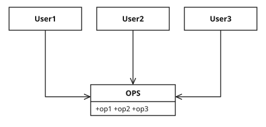
En la situación ilustrada en la figura 10.1, hay varios usuarios que usan las operaciones de la clase OPS. Supongamos que User1 solo usa op1, User2 solo usa op2 y User3 solo usa op3.
Ahora imagina que OPS es una clase escrita en un lenguaje como Java. Evidentemente, en ese caso el código fuente de User1 dependerá sin querer de op2 y op3, aunque no las llame. Esta dependencia significa que un cambio en el código fuente de op2 en OPS obligará a recompilar y volver a desplegar User1, aunque en realidad no haya cambiado nada que le importe.
Este problema puede resolverse separando las operaciones en interfaces, como se muestra en la figura 10.2.
De nuevo, si imaginamos que esto está implementado en un lenguaje de tipado estático como Java, el código fuente de User1 dependerá de U1Ops y de op1, pero no de OPS. Así, un cambio en OPS que no le importe a User1 no hará que User1 deba recompilarse y volver a desplegarse.
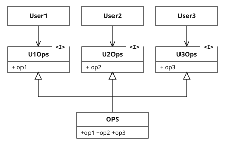
U1Ops, U2Ops, U3Ops). OPS sigue existiendo y las implementa todas (triángulos huecos). La lógica no cambia; lo que cambia es de qué depende cada usuario.Evidentemente, la descripción anterior depende de forma crítica del tipo de lenguaje. Los lenguajes de tipado estático, como Java, obligan a los programadores a crear declaraciones que los usuarios deben importar, usar (use) o incluir (include) de alguna otra forma. Son estas declaraciones incluidas en el código fuente las que crean las dependencias de código fuente que obligan a recompilar y volver a desplegar.
En los lenguajes de tipado dinámico, como Ruby y Python, esas declaraciones no existen en el código fuente. En su lugar, se infieren en tiempo de ejecución. Por tanto, no hay dependencias de código fuente que obliguen a recompilar y volver a desplegar. Esta es la razón principal de que los lenguajes de tipado dinámico creen sistemas más flexibles y menos acoplados que los de tipado estático.
Este hecho podría llevarte a concluir que el ISP es una cuestión de lenguaje, más que de arquitectura.
Si das un paso atrás y miras las motivaciones de fondo del ISP, verás que esconde una preocupación más profunda. En general, es perjudicial depender de módulos que contienen más de lo que necesitas. Esto es obviamente cierto para las dependencias de código fuente, que pueden obligar a recompilaciones y despliegues innecesarios, pero también lo es a un nivel mucho más alto: el arquitectónico.
Pensemos, por ejemplo, en un arquitecto que trabaja en un sistema S y quiere incluir en él cierto framework F. Supongamos ahora que los autores de F lo han ligado a una base de datos concreta, D. Así, S depende de F, que a su vez depende de D (figura 10.3).
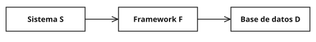
Supongamos ahora que D contiene funcionalidades que F no usa y que, por tanto, a S no le importan. Los cambios en esas funcionalidades de D pueden obligar a volver a desplegar F y, por tanto, a volver a desplegar S. Peor aún: un fallo en una de las funcionalidades de D puede provocar fallos en F y en S.
La lección aquí es que depender de algo que trae un equipaje que no necesitas puede causarte problemas que no esperabas.
Exploraremos esta idea con más detalle cuando tratemos el principio de reutilización común (Common Reuse Principle) en el capítulo 13, «Cohesión de componentes».
11
El principio de inversión de dependencias (DIP) nos dice que los sistemas más flexibles son aquellos en los que las dependencias de código fuente se refieren solo a abstracciones, no a concreciones.
En un lenguaje de tipado estático, como Java, esto significa que las sentencias use, import e include solo deberían referirse a módulos fuente que contengan interfaces, clases abstractas o algún otro tipo de declaración abstracta. No se debería depender de nada concreto.
La misma regla se aplica a los lenguajes de tipado dinámico, como Ruby y Python. Las dependencias de código fuente no deberían referirse a módulos concretos. Sin embargo, en estos lenguajes es un poco más difícil definir qué es un módulo concreto. En particular, es cualquier módulo en el que estén implementadas las funciones a las que se llama.
Evidentemente, tratar esta idea como una regla absoluta no es realista, porque los sistemas de software tienen que depender de muchos recursos concretos. Por ejemplo, la clase String de Java es concreta, y no sería realista intentar forzarla a ser abstracta. La dependencia de código fuente de la clase concreta java.lang.String no puede ni debe evitarse.
En comparación, la clase String es muy estable. Los cambios en esa clase son muy raros y están estrictamente controlados. Programadores y arquitectos no tienen que preocuparse por cambios frecuentes y caprichosos en String.
Por estas razones, cuando se trata del DIP tendemos a ignorar el trasfondo estable que forman los recursos del sistema operativo y de la plataforma. Toleramos esas dependencias concretas porque sabemos que podemos confiar en que no cambiarán.
De lo que queremos evitar depender es de los elementos concretos volátiles de nuestro sistema. Esos son los módulos que estamos desarrollando activamente y que cambian con frecuencia.
String, List, la biblioteca estándar, el sistema operativo. Casi nunca cambian.MySqlUserRepository, tu servicio de pagos, tu controlador web. Los estás escribiendo y cambiando cada semana.java.lang.string en minúscula; la clase real es java.lang.String.)
Todo cambio en una interfaz abstracta se corresponde con un cambio en sus implementaciones concretas. En cambio, los cambios en las implementaciones concretas no siempre requieren cambios en las interfaces que implementan; de hecho, normalmente no los requieren. Por tanto, las interfaces son menos volátiles que las implementaciones.
De hecho, los buenos diseñadores y arquitectos de software se esfuerzan mucho por reducir la volatilidad de las interfaces. Intentan encontrar formas de añadir funcionalidad a las implementaciones sin modificar las interfaces. Esto es lo más básico del diseño de software.
La consecuencia, entonces, es que las arquitecturas de software estables son las que evitan depender de concreciones volátiles y favorecen el uso de interfaces abstractas estables. Esta consecuencia se reduce a un conjunto de prácticas de programación muy concretas:
Para cumplir estas reglas, la creación de objetos concretos volátiles requiere un tratamiento especial. Esta precaución está justificada porque, prácticamente en todos los lenguajes, crear un objeto requiere una dependencia de código fuente de la definición concreta de ese objeto.
En la mayoría de los lenguajes orientados a objetos, como Java, usaríamos una fábrica abstracta (Abstract Factory) para gestionar esta dependencia indeseable.
El diagrama de la figura 11.1 muestra la estructura. Application usa ConcreteImpl a través de la interfaz Service. Sin embargo, Application tiene que crear de algún modo instancias de ConcreteImpl. Para conseguirlo sin crear una dependencia de código fuente de ConcreteImpl, Application llama al método makeSvc de la interfaz ServiceFactory. Este método lo implementa la clase ServiceFactoryImpl, que deriva de ServiceFactory. Esa implementación instancia ConcreteImpl y la devuelve como un Service.
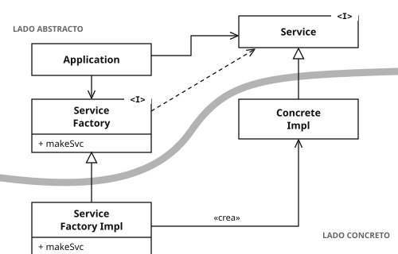
La línea curva de la figura 11.1 es un límite arquitectónico. Separa lo abstracto de lo concreto. Todas las dependencias de código fuente cruzan esa línea curva apuntando en la misma dirección: hacia el lado abstracto.
La línea curva divide el sistema en dos componentes: uno abstracto y otro concreto. El componente abstracto contiene todas las reglas de negocio de alto nivel de la aplicación. El componente concreto contiene todos los detalles de implementación que esas reglas de negocio manipulan.
Observa que el flujo de control cruza la línea curva en la dirección opuesta a la de las dependencias de código fuente. Las dependencias de código fuente están invertidas respecto al flujo de control, y por eso a este principio lo llamamos inversión de dependencias.
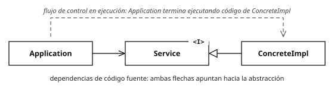
Application acaba ejecutando código de ConcreteImpl (flecha discontinua, de izquierda a derecha). Pero en el código fuente, Application solo menciona Service, y ConcreteImpl también apunta hacia Service. La flecha de ConcreteImpl va en sentido contrario al flujo de control: por eso se habla de «inversión».// ---- lado abstracto (reglas de negocio) ----
interface Service { void execute(); }
interface ServiceFactory { Service makeSvc(); }
class Application {
private final ServiceFactory factory;
Application(ServiceFactory f) { this.factory = f; }
void run() { factory.makeSvc().execute(); } // nunca nombra ConcreteImpl
}
// ---- lado concreto (detalles) ----
class ConcreteImpl implements Service {
public void execute() { /* detalle concreto */ }
}
class ServiceFactoryImpl implements ServiceFactory {
public Service makeSvc() { return new ConcreteImpl(); } // el único "new"
}
// ---- main: el componente concreto que lo conecta todo ----
public static void main(String[] a) {
new Application(new ServiceFactoryImpl()).run();
}
Si mañana cambias ConcreteImpl por otra implementación, Application no se toca ni se recompila. El libro propone pasar la fábrica mediante una variable global; aquí se pasa por el constructor (inyección de dependencias), que es la forma más habitual hoy en día. La idea es la misma.
El componente concreto de la figura 11.1 contiene una única dependencia, así que viola el DIP. Esto es lo habitual. Las violaciones del DIP no pueden eliminarse por completo, pero pueden reunirse en un número reducido de componentes concretos y mantenerse separadas del resto del sistema.
La mayoría de los sistemas contendrán al menos un componente concreto de este tipo, a menudo llamado main porque contiene la función main.En otras palabras, la función que invoca el sistema operativo cuando la aplicación se inicia por primera vez. En el caso ilustrado en la figura 11.1, la función main instanciaría ServiceFactoryImpl y colocaría esa instancia en una variable global de tipo ServiceFactory. Después, Application accedería a la fábrica a través de esa variable global.
ServiceFactoryImpl a ConcreteImpl: para hacer new ConcreteImpl(), alguien tiene que nombrar la clase concreta. Es inevitable, así que se arrincona en un único sitio del lado concreto (la fábrica o main) y no se reparte por todo el código.
A medida que avancemos en este libro y tratemos principios arquitectónicos de nivel superior, el DIP aparecerá una y otra vez. Será el principio organizativo más visible en nuestros diagramas de arquitectura. La línea curva de la figura 11.1 se convertirá en los límites arquitectónicos de los capítulos posteriores. La forma en que las dependencias cruzan esa línea curva en una sola dirección, y hacia entidades más abstractas, se convertirá en una nueva regla que llamaremos la regla de dependencia (Dependency Rule).
| Principio | En una frase | Señal de que lo violas | Cómo se arregla |
|---|---|---|---|
| SRP Responsabilidad única | Cada módulo responde ante un solo actor (grupo de personas que pide cambios). | Un mismo archivo cambia por peticiones de áreas distintas; conflictos de merge frecuentes. | Separar el código por actor (fig. 7.3–7.5); usar una fachada si hace falta. |
| OCP Abierto-cerrado | Añadir comportamiento con código nuevo, sin modificar el existente. | Cada nueva funcionalidad obliga a tocar las reglas de negocio. | SRP más DIP: separar responsabilidades y hacer que las dependencias apunten hacia lo más importante (fig. 8.2–8.3). |
| LSP Sustitución de Liskov | Las implementaciones deben ser intercambiables sin que quien las usa note la diferencia. | Aparecen if (es de tipo X) o if (url empieza por "acme"). | Respetar el contrato de la interfaz; si no se puede, no heredar o no implementar esa interfaz. |
| ISP Segregación de interfaces | No depender de cosas que no usas. | Recompilas o redespliegas por cambios que no te afectan; dependencias que arrastran «equipaje». | Interfaces pequeñas por cliente (fig. 10.2); elegir dependencias ligeras. |
| DIP Inversión de dependencias | El código de alto nivel depende de abstracciones; los detalles también dependen de ellas. | Las reglas de negocio importan clases de base de datos, web o frameworks. | Interfaces del lado de las políticas, fábricas abstractas, y todo el new concreto en main (fig. 11.1). |
Cómo encajan: el SRP decide dónde cortar; el DIP decide hacia dónde apuntan las flechas en cada corte; el ISP mantiene los cortes delgados; el LSP garantiza que lo que hay a cada lado del corte sea intercambiable; y el resultado de todo junto es el OCP: un sistema que crece añadiendo en lugar de modificando.
Lo que viene en el libro: el SRP reaparece como principio de cierre común (cap. 13), el ISP como principio de reutilización común (cap. 13), y la línea curva del DIP se convierte en la regla de dependencia de la arquitectura limpia (Parte V).